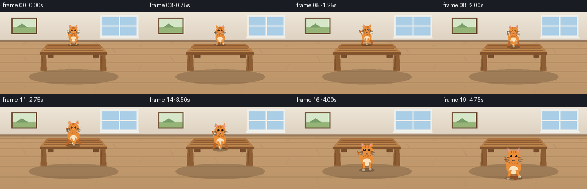
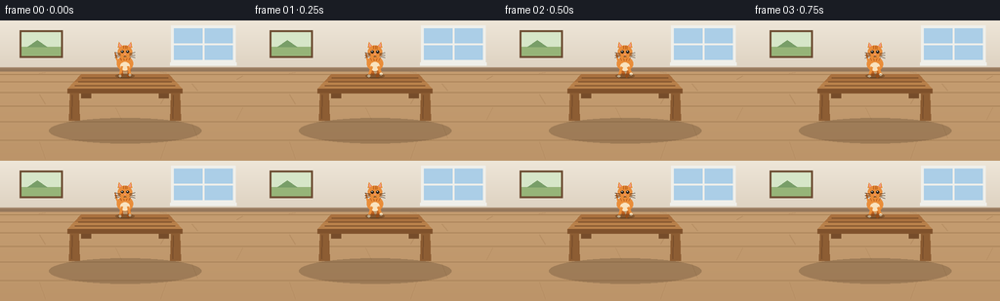
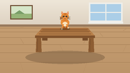
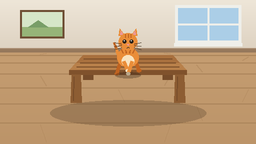
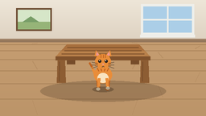

CODING AGENTS AS PIXEL WORLD MODELS
traex/Seed-2.1-Pro-0915 · dynamic_spatial_relationship_0012
点击播放 · 原生 RGB 像素
逐轮保存的候选
回放视频、检查图与代码变化。
每份候选均可单独播放。实际图片检查记录在下方工具轨迹中。
候选 01播放与检查图
点击播放 · 原生 RGB 像素


展开代码变化
--- 上一保存版本
+++ 本次保存版本
@@ -0,0 +1,382 @@
+"""Procedural text-to-video generation.
+
+Scene: a cat is on a table, then runs to the front of the table.
+Renders 20 RGB frames at 256x144 (4 fps) using PIL/numpy only.
+"""
+import math
+from pathlib import Path
+
+import numpy as np
+from PIL import Image, ImageDraw
+
+import artifact_io
+
+W, H = 256, 144
+N_FRAMES = 20
+FPS = 4.0
+SS = 2 # supersampling factor
+
+# ---------------------------------------------------------------- palette
+WALL_TOP = (238, 230, 216)
+WALL_BOT = (221, 209, 192)
+BASEBOARD = (150, 120, 92)
+FLOOR = (197, 157, 113)
+FLOOR_LINE = (171, 132, 90)
+FLOOR_SEAM = (183, 143, 100)
+TABLE_TOP = (184, 128, 74)
+TABLE_TOP_FAR = (168, 112, 62)
+TABLE_EDGE = (128, 82, 44)
+TABLE_LEG = (141, 93, 51)
+TABLE_LEG_DARK = (118, 76, 42)
+GRAIN = (122, 78, 42)
+CAT = (233, 141, 57)
+CAT_DARK = (191, 99, 33)
+CREAM = (249, 227, 191)
+PINK = (236, 152, 152)
+EYE = (42, 33, 25)
+WHISKER = (74, 58, 42)
+SKY = (171, 206, 231)
+FRAME_WHITE = (239, 239, 234)
+DUST = (222, 212, 197)
+
+# ------------------------------------------------------------- projection
+HORIZON = 52.0
+GROUND_SPAN = H - HORIZON
+
+
+def persp(d):
+ """Scale factor for depth d in [0, 1] (0 far, 1 near)."""
+ return 0.45 + 0.9 * d
+
+
+def ground_y(d):
+ return HORIZON + GROUND_SPAN * d
+
+
+TABLE_D0, TABLE_D1 = 0.30, 0.55
+TABLE_LEG_H = 34.0
+TABLE_HALF_W = 62.0
+
+
+def table_top_y(d):
+ return ground_y(d) - TABLE_LEG_H * persp(d)
+
+
+def lerp(a, b, t):
+ return a + (b - a) * t
+
+
+def smooth(t):
+ return t * t * (3.0 - 2.0 * t)
+
+
+# --------------------------------------------------------------- helpers
+def bbox(x0, y0, x1, y1):
+ return [x0 * SS, y0 * SS, x1 * SS, y1 * SS]
+
+
+def pt(x, y):
+ return (x * SS, y * SS)
+
+
+def lw(v):
+ return max(1, int(round(v * SS)))
+
+
+# ------------------------------------------------------------- background
+def render_background():
+ img = Image.new("RGB", (W * SS, H * SS))
+ d = ImageDraw.Draw(img)
+
+ # wall with vertical gradient
+ for y in range(int(HORIZON * SS)):
+ t = y / (HORIZON * SS)
+ c = tuple(int(lerp(WALL_TOP[i], WALL_BOT[i], t)) for i in range(3))
+ d.line([(0, y), (W * SS, y)], fill=c)
+
+ # floor with vertical gradient
+ for y in range(int(HORIZON * SS), H * SS):
+ t = (y - HORIZON * SS) / (GROUND_SPAN * SS)
+ c = tuple(int(lerp(FLOOR[i], FLOOR_LINE[i], t * 0.35)) for i in range(3))
+ d.line([(0, y), (W * SS, y)], fill=c)
+
+ # baseboard
+ d.rectangle(bbox(0, HORIZON - 4, W, HORIZON), fill=BASEBOARD)
+ d.line([pt(0, HORIZON - 4), pt(W, HORIZON - 4)], fill=(170, 142, 114), width=lw(1))
+
+ # floor planks: horizontal lines with perspective spacing
+ for k in range(1, 8):
+ dd = (k / 7.0) ** 1.7
+ y = HORIZON + GROUND_SPAN * dd
+ d.line([pt(0, y), pt(W, y)], fill=FLOOR_LINE, width=lw(1))
+ # staggered plank seams
+ for k in range(7):
+ dd0 = (k / 7.0) ** 1.7
+ dd1 = ((k + 1) / 7.0) ** 1.7
+ y0, y1 = HORIZON + GROUND_SPAN * dd0, HORIZON + GROUND_SPAN * dd1
+ xs = 40 + (k % 3) * 78
+ d.line([pt(xs, y0 + 2), pt(xs + 6, y1 - 2)], fill=FLOOR_SEAM, width=lw(1))
+ d.line([pt(xs + 130, y0 + 2), pt(xs + 124, y1 - 2)], fill=FLOOR_SEAM, width=lw(1))
+
+ # window on the right
+ wx0, wy0, wx1, wy1 = 178, 8, 238, 40
+ d.rectangle(bbox(wx0 - 3, wy0 - 3, wx1 + 3, wy1 + 3), fill=FRAME_WHITE)
+ d.rectangle(bbox(wx0, wy0, wx1, wy1), fill=SKY)
+ d.line([pt((wx0 + wx1) / 2, wy0), pt((wx0 + wx1) / 2, wy1)], fill=FRAME_WHITE, width=lw(2))
+ d.line([pt(wx0, (wy0 + wy1) / 2), pt(wx1, (wy0 + wy1) / 2)], fill=FRAME_WHITE, width=lw(2))
+ d.rectangle(bbox(wx0 - 4, wy1 + 3, wx1 + 4, wy1 + 6), fill=FRAME_WHITE)
+
+ # small framed picture on the left
+ px0, py0, px1, py1 = 22, 12, 62, 36
+ d.rectangle(bbox(px0 - 2, py0 - 2, px1 + 2, py1 + 2), fill=(110, 78, 52))
+ d.rectangle(bbox(px0, py0, px1, py1), fill=(214, 230, 200))
+ d.rectangle(bbox(px0, py1 - 9, px1, py1), fill=(150, 180, 120))
+ d.polygon([pt(px0 + 6, py1 - 9), pt(px0 + 16, py0 + 8), pt(px0 + 26, py1 - 9)], fill=(120, 158, 104))
+
+ return img
+
+
+# ------------------------------------------------------------------ table
+def table_corners():
+ d0, d1 = TABLE_D0, TABLE_D1
+ yb0, yb1 = ground_y(d0), ground_y(d1)
+ yt0, yt1 = table_top_y(d0), table_top_y(d1)
+ hw0, hw1 = TABLE_HALF_W * persp(d0), TABLE_HALF_W * persp(d1)
+ cx = W / 2.0
+ return {
+ "bl": (cx - hw0, yt0), "br": (cx + hw0, yt0),
+ "fl": (cx - hw1, yt1), "fr": (cx + hw1, yt1),
+ "gbl": (cx - hw0, yb0), "gbr": (cx + hw0, yb0),
+ "gfl": (cx - hw1, yb1), "gfr": (cx + hw1, yb1),
+ }
+
+
+def render_table_shadow(layer):
+ d = ImageDraw.Draw(layer)
+ cx = W / 2.0
+ d.ellipse(bbox(cx - 78, 100, cx + 78, 126), fill=(40, 26, 14, 55))
+
+
+def render_table(img):
+ d = ImageDraw.Draw(img)
+ c = table_corners()
+
+ # back legs (partly hidden by the tabletop later)
+ for top, ground in ((c["bl"], c["gbl"]), (c["br"], c["gbr"])):
+ x = top[0] + (5 if top[0] < W / 2 else -5)
+ d.polygon([pt(x - 4, top[1] + 2), pt(x + 4, top[1] + 2),
+ pt(x + 5, ground[1]), pt(x - 5, ground[1])], fill=TABLE_LEG_DARK)
+
+ # tabletop
+ d.polygon([pt(*c["bl"]), pt(*c["br"]), pt(*c["fr"]), pt(*c["fl"])], fill=TABLE_TOP)
+ d.polygon([pt(*c["bl"]), pt(*c["br"]),
+ pt((c["br"][0] + c["fr"][0]) / 2, (c["br"][1] + c["fr"][1]) / 2),
+ pt((c["bl"][0] + c["fl"][0]) / 2, (c["bl"][1] + c["fl"][1]) / 2)],
+ fill=TABLE_TOP_FAR)
+
+ # wood grain along the top
+ for k in range(1, 4):
+ u = k / 4.0
+ yl = lerp(c["bl"][1], c["fl"][1], u)
+ yr = lerp(c["br"][1], c["fr"][1], u)
+ xl = lerp(c["bl"][0], c["fl"][0], u)
+ xr = lerp(c["br"][0], c["fr"][0], u)
+ d.line([pt(xl + 4, yl), pt(xr - 4, yr)], fill=GRAIN, width=lw(1))
+
+ # front thickness face
+ thick = 4.5
+ d.polygon([pt(*c["fl"]), pt(*c["fr"]),
+ pt(c["fr"][0], c["fr"][1] + thick), pt(c["fl"][0], c["fl"][1] + thick)],
+ fill=TABLE_EDGE)
+
+ # front legs
+ for top, ground in ((c["fl"], c["gfl"]), (c["fr"], c["gfr"])):
+ x = top[0] + (7 if top[0] < W / 2 else -7)
+ d.polygon([pt(x - 4.5, top[1] + thick), pt(x + 4.5, top[1] + thick),
+ pt(x + 5.5, ground[1]), pt(x - 5.5, ground[1])], fill=TABLE_LEG)
+ d.line([pt(x - 2.5, top[1] + thick + 2), pt(x - 3, ground[1] - 2)],
+ fill=TABLE_LEG_DARK, width=lw(1))
+
+
+# -------------------------------------------------------------------- cat
+def draw_cat(base, shadow_layer, cx, feet, s, phase, running, on_floor):
+ d = ImageDraw.Draw(base)
+ sd = ImageDraw.Draw(shadow_layer)
+
+ # contact shadow on whatever surface the cat is above
+ sd.ellipse(bbox(cx - 13 * s, feet - 3.2 * s, cx + 13 * s, feet + 3.2 * s),
+ fill=(35, 22, 12, 75))
+
+ if running:
+ bob = -1.5 * abs(math.sin(phase)) * s
+ else:
+ bob = 0.4 * s * math.sin(phase * 0.6)
+ cy = feet + bob
+
+ # tail, curling up behind the body with a gentle sway
+ sway = math.sin(phase * 0.8) * 0.35
+ tail_pts = []
+ for i in range(7):
+ u = i / 6.0
+ x = cx + (-8.0 - 7.0 * u) * s + sway * 9.0 * s * u
+ y = cy - (15.0 + 17.0 * u) * s
+ tail_pts.append((x, y))
+ for i in range(len(tail_pts) - 1):
+ w = max(1.0, (3.4 - 1.8 * (i / len(tail_pts))) * s)
+ color = CAT_DARK if i >= len(tail_pts) - 3 else CAT
+ d.line([pt(*tail_pts[i]), pt(*tail_pts[i + 1])], fill=color, width=lw(w))
+
+ # back legs (darker, swing in counterphase)
+ for sign in (-1, 1):
+ ph = phase + (0.0 if sign < 0 else math.pi)
+ swing = math.sin(ph) * 4.6 * s
+ lift = max(0.0, math.sin(ph)) * 3.2 * s
+ hip = (cx + sign * 7.0 * s, cy - 15.0 * s)
+ paw = (cx + sign * 7.0 * s + swing, cy - lift)
+ d.line([pt(*hip), pt(*paw)], fill=CAT_DARK, width=lw(3.8 * s))
+ d.ellipse(bbox(paw[0] - 2.2 * s, paw[1] - 1.8 * s,
+ paw[0] + 2.2 * s, paw[1] + 1.8 * s), fill=CAT_DARK)
+
+ # body
+ d.ellipse(bbox(cx - 11.0 * s, cy - 27.0 * s, cx + 11.0 * s, cy - 7.0 * s), fill=CAT)
+ # cream chest/belly
+ d.ellipse(bbox(cx - 6.5 * s, cy - 19.0 * s, cx + 6.5 * s, cy - 7.5 * s), fill=CREAM)
+ # tabby stripes across the back
+ for dx in (-7.0, -2.5, 2.5, 7.0):
+ d.line([pt(cx + dx * s, cy - 25.5 * s),
+ pt(cx + (dx * 0.7) * s, cy - 21.5 * s)],
+ fill=CAT_DARK, width=lw(1.3 * s))
+
+ # front legs, opposite pair to the back legs
+ for sign in (-1, 1):
+ ph = phase + (math.pi if sign < 0 else 0.0)
+ swing = math.sin(ph) * 4.2 * s
+ lift = max(0.0, math.sin(ph)) * 3.0 * s
+ shoulder = (cx + sign * 4.5 * s, cy - 13.0 * s)
+ paw = (cx + sign * 4.5 * s + swing, cy - lift)
+ d.line([pt(*shoulder), pt(*paw)], fill=CAT, width=lw(3.4 * s))
+ d.ellipse(bbox(paw[0] - 2.0 * s, paw[1] - 1.6 * s,
+ paw[0] + 2.0 * s, paw[1] + 1.6 * s), fill=CREAM)
+
+ # head
+ hy = cy - 33.0 * s
+ hr_x, hr_y = 9.5 * s, 9.0 * s
+ # ears (drawn first so the head overlaps their base)
+ for sign in (-1, 1):
+ ex = cx + sign * 6.2 * s
+ outer = [(ex - 3.6 * s, hy - 6.5 * s),
+ (ex + 3.6 * s, hy - 6.5 * s),
+ (ex + sign * 2.4 * s, hy - 13.5 * s)]
+ d.polygon([pt(*p_) for p_ in outer], fill=CAT)
+ inner = [(ex - 1.8 * s, hy - 7.6 * s),
+ (ex + 1.8 * s, hy - 7.6 * s),
+ (ex + sign * 1.4 * s, hy - 11.8 * s)]
+ d.polygon([pt(*p_) for p_ in inner], fill=PINK)
+ d.ellipse(bbox(cx - hr_x, hy - hr_y, cx + hr_x, hy + 8.5 * s), fill=CAT)
+
+ # forehead stripes
+ for dx in (-2.6, 0.0, 2.6):
+ d.line([pt(cx + dx * s, hy - 8.2 * s), pt(cx + dx * s, hy - 4.6 * s)],
+ fill=CAT_DARK, width=lw(1.1 * s))
+ # cheek stripes
+ for sign in (-1, 1):
+ for k in range(2):
+ yy = hy + (1.5 + k * 2.6) * s
+ d.line([pt(cx + sign * 7.2 * s, yy), pt(cx + sign * 9.6 * s, yy + 0.8 * s)],
+ fill=CAT_DARK, width=lw(1.0 * s))
+
+ # eyes
+ for sign in (-1, 1):
+ ex = cx + sign * 3.7 * s
+ d.ellipse(bbox(ex - 1.7 * s, hy - 2.2 * s, ex + 1.7 * s, hy + 1.4 * s), fill=EYE)
+ d.ellipse(bbox(ex - 0.7 * s, hy - 1.8 * s, ex + 0.1 * s, hy - 1.0 * s), fill=(245, 245, 240))
+
+ # nose and mouth
+ d.polygon([pt(cx - 1.3 * s, hy + 2.6 * s), pt(cx + 1.3 * s, hy + 2.6 * s),
+ pt(cx, hy + 4.0 * s)], fill=PINK)
+ d.arc(bbox(cx - 2.4 * s, hy + 3.6 * s, cx, hy + 6.4 * s), 20, 100, fill=WHISKER, width=lw(0.8))
+ d.arc(bbox(cx, hy + 3.6 * s, cx + 2.4 * s, hy + 6.4 * s), 80, 160, fill=WHISKER, width=lw(0.8))
+
+ # whiskers
+ for sign in (-1, 1):
+ for k, ang in enumerate((-0.25, 0.05, 0.35)):
+ yy = hy + (2.2 + k * 1.8) * s
+ x0 = cx + sign * 6.5 * s
+ x1 = cx + sign * 13.5 * s
+ d.line([pt(x0, yy), pt(x1, yy + ang * 6.0 * s)], fill=WHISKER, width=lw(0.7))
+
+ # dust puffs while running on the floor
+ if running and on_floor:
+ for k in (-1, 1):
+ ph = phase + k * math.pi
+ if math.sin(ph) > 0.55:
+ r = (1.8 + 1.6 * math.sin(ph)) * s
+ px = cx + k * 6.0 * s
+ d.ellipse(bbox(px - r, feet - r, px + r, feet + r * 0.6),
+ fill=DUST)
+
+
+# ------------------------------------------------------------- trajectory
+def cat_state(frame):
+ """Return depth d, feet screen y, scale, running flag, on-floor flag."""
+ if frame <= 4:
+ d = 0.33
+ feet = table_top_y(d)
+ running = False
+ elif frame <= 13:
+ t = smooth((frame - 5) / 8.0)
+ d = lerp(0.33, TABLE_D1, t)
+ feet = table_top_y(d)
+ running = True
+ elif frame == 14:
+ d = 0.57
+ feet = lerp(table_top_y(TABLE_D1), ground_y(0.60), 0.4) - 10.0
+ running = True
+ elif frame == 15:
+ d = 0.60
+ feet = lerp(table_top_y(TABLE_D1), ground_y(0.60), 0.75) - 7.0
+ running = True
+ elif frame <= 19:
+ t = smooth((frame - 16) / 3.0)
+ d = lerp(0.64, 0.80, t)
+ feet = ground_y(d)
+ running = frame < 19
+ else:
+ d = 0.80
+ feet = ground_y(d)
+ running = False
+ return d, feet, persp(d), running, d > TABLE_D1 + 0.02
+
+
+# ----------------------------------------------------------------- main
+def main():
+ case_dir = Path(__file__).resolve().parent
+ background = render_background()
+
+ table_shadow = Image.new("RGBA", (W * SS, H * SS), (0, 0, 0, 0))
+ render_table_shadow(table_shadow)
+
+ frames = []
+ phase = 0.0
+ for f in range(N_FRAMES):
+ d, feet, s, running, on_floor = cat_state(f)
+ phase += 2.1 if running else 0.55
+
+ img = background.copy()
+ img.paste(table_shadow, (0, 0), table_shadow)
+ render_table(img)
+
+ shadow = Image.new("RGBA", (W * SS, H * SS), (0, 0, 0, 0))
+ draw_cat(img, shadow, W / 2.0, feet, s, phase, running, on_floor)
+ img = Image.alpha_composite(img.convert("RGBA"), shadow).convert("RGB")
+
+ out = img.resize((W, H), Image.Resampling.LANCZOS)
+ frames.append(np.asarray(out, dtype=np.uint8))
+
+ frames = np.stack(frames, axis=0)
+ artifact_io.save(frames, case_dir)
+ print(f"saved {frames.shape} to {case_dir}")
+
+
+if __name__ == "__main__":
+ main()
可观测工具轨迹
实际执行的命令与返回图片。
命令 1exit 0
/bin/bash -lc 'cat prompt.txt; echo "---"; cat GENERATION_RULES.md; echo "---"; cat task_spec.json; echo "---"; ls -la'
命令 2exit 0
/bin/bash -lc 'cat artifact_io.py'
命令 3exit 0
/bin/bash -lc 'cd . && python generate.py && ls -la'
视觉工具实际返回图片 1

视觉工具实际返回图片 2

视觉工具实际返回图片 3

视觉工具实际返回图片 4

保存候选 1 份；完成命令 3 次；可验证图片返回 4 张。原始 API 响应与完整日志保留在本地。